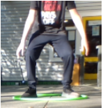

Step 1 Put the hula hoop on the ground, and step into the middle of it. Pick it up and bring it round your waist.
Step 2 Twist the hula hoop ( look at picture)
Step 3 Spin the hula hoop in the opposite direction that it is twisted and release your hands, at the same time move your hips in a circular motion attempting to keep the hula hoop around your waist.
Extra for experts Once you have mastered hula hooping try doing it around your arm. Itś basically the same, but be careful not to let it slip off. You can also try switching between arms.